Learning Module 6 Fixed-Income Bond Valuation: Prices and Yields - Part 2: Relationships between Bond Prices and Bond Features
Volume 6: Fixed Income
Learning Module 6 Fixed-Income Bond Valuation: Prices and Yields
Part 2/2: Relationships between Bond Prices and Bond Features (PDF Pages 153–166)
Tập 6: Chứng Khoán Thu Nhập Cố Định (Fixed Income)
Học phần 6: Định Giá Trái Phiếu Thu Nhập Cố Định: Giá và Lợi Suất (Fixed-Income Bond Valuation: Prices and Yields)
Phần 2/2: Mối Quan Hệ Giữa Giá Trái Phiếu và Các Đặc Tính của Trái Phiếu (Trang PDF 153–166)
= 108.584
= 108.584
Step 2 Calculate the number of days ( t ):
Bước 2: Tính số ngày ($t$):
| Month | Days |
|---|---|
| August | 16 |
| September | 30 |
| October | 30 |
| November | 30 |
| December | 23 |
| Total | 129 |
| Tháng (Month) | Số ngày (Days) |
|---|---|
| Tháng 8 (August) | 16 |
| Tháng 9 (September) | 30 |
| Tháng 10 (October) | 30 |
| Tháng 11 (November) | 30 |
| Tháng 12 (December) | 23 |
| Tổng cộng (Total) | 129 |
Step 3 Assume the number of days in the coupon period ( T ) is 360. Step 4 Use Equation 6 to solve for PVFull :
Bước 3: Giả định số ngày trong kỳ trả lãi coupon ($T$) là 360.
Bước 4: Sử dụng Phương trình 6 để giải tìm $PV^{Full}$:
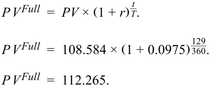
Step 5 Use Equation 4 to solve for accrued interest:
Bước 5: Sử dụng Phương trình 4 để giải tìm lãi tích lũy:
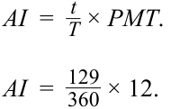
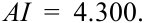
Step 6 Use Equation 3 to solve for PVFlat :
Bước 6: Sử dụng Phương trình 3 để giải tìm $PV^{Flat}$:
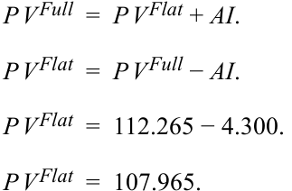
Lưu ý: Các đại lượng trong phép tính không được làm tròn trong quá trình tính toán, mặc dù chúng được hiển thị với ba chữ số thập phân cho mục đích trình bày. Kết quả cuối cùng được làm tròn đến ba chữ số thập phân.
Note : Quantities in the calculation are not rounded, though they are shown with three decimal places for presentation purposes. Solutions are rounded to three decimal places.
RELATIONSHIPS BETWEEN BOND PRICES AND BOND FEATURES
MỐI QUAN HỆ GIỮA GIÁ TRÁI PHIẾU VÀ CÁC ĐẶC TÍNH CỦA TRÁI PHIẾU (RELATIONSHIPS BETWEEN BOND PRICES AND BOND FEATURES)
3
3
identify the relationships among a bond’s price, coupon rate, maturity, and yield-to-maturity
xác định mối quan hệ giữa giá trái phiếu, lãi suất coupon (coupon rate), kỳ hạn (maturity) và lợi suất đáo hạn (yield-to-maturity)
Inverse Relationship
Mối Quan Hệ Ngược Chiều (Inverse Relationship)
As seen in the prior lesson, the price of a fixed-rate bond will change as the interest rate used to discount future cash flows changes. For any time-value-of-money calculation, a higher discount rate results in a lower present value for any fixed future cash flow and a lower discount rate results in a higher present value. Therefore, bond yields-to-maturity and prices move in opposite directions.
Như đã thấy trong bài học trước, giá của một trái phiếu lãi suất cố định sẽ thay đổi khi lãi suất được sử dụng để chiết khấu các dòng tiền tương lai thay đổi. Đối với bất kỳ phép tính giá trị thời gian của tiền tệ nào, lãi suất chiết khấu cao hơn sẽ dẫn đến giá trị hiện tại thấp hơn cho bất kỳ dòng tiền tương lai cố định nào, và lãi suất chiết khấu thấp hơn sẽ dẫn đến giá trị hiện tại cao hơn. Do đó, lợi suất đáo hạn và giá trái phiếu luôn biến động ngược chiều nhau.
Coupon Effect
Hiệu Ứng Coupon (Coupon Effect)
The size of bond coupon cash flows affects how much a bond’s price will change for a given yield change for bonds of the same maturity. The lower a bond’s coupon, the higher the proportion of total cash flow that occurs at maturity. Discounting this final cash flow by the factor of (1 + r )N as shown in Equation 2 magnifies the impact of a given change in r relative to bonds whose final cash flow is a smaller proportion of the total. This coupon effect is best demonstrated by comparing the extreme case of a zero-coupon bond (with 100% of cash flows including cumulative interest paid at maturity) with an otherwise identical fixed-coupon bond, as in the following example.
Quy mô của các dòng tiền coupon của trái phiếu ảnh hưởng đến mức độ thay đổi giá trái phiếu đối với một mức thay đổi lợi suất nhất định cho các trái phiếu có cùng kỳ hạn. Lãi suất coupon của một trái phiếu càng thấp thì tỷ trọng (proportion) của tổng dòng tiền phát sinh vào lúc đáo hạn càng cao. Việc chiết khấu dòng tiền cuối cùng này theo thừa số $(1 + r)^N$ như được thể hiện trong Phương trình 2 sẽ khuếch đại tác động của một sự thay đổi nhất định trong $r$ so với những trái phiếu có dòng tiền cuối cùng chiếm tỷ trọng nhỏ hơn trong tổng dòng tiền. Hiệu ứng coupon (coupon effect) này được minh họa rõ nhất bằng cách so sánh trường hợp cực đoan của một trái phiếu không trả lãi định kỳ (zero-coupon bond, với 100% dòng tiền bao gồm cả tiền lãi tích lũy được thanh toán khi đáo hạn) với một trái phiếu trả lãi cố định giống hệt về mọi mặt khác, như trong ví dụ sau đây.
EXAMPLE 5
VÍ DỤ 5 (EXAMPLE 5)
Yield Change Effect for Zero-Coupon vs. Coupon Bond
Tác Động Thay Đổi Lợi Suất Đối Với Trái Phiếu Không Trả Lãi Định Kỳ so với Trái Phiếu Có Trả Lãi Coupon (Yield Change Effect for Zero-Coupon vs. Coupon Bond)
Assume an investor has the choice between the 4.625% fixed-coupon 30-year Romania Eurobond priced at par and an otherwise identical zero-coupon bond from the same issuer at the same yield-to-maturity of 4.625%.
Giả sử một nhà đầu tư có sự lựa chọn giữa trái phiếu Eurobond kỳ hạn 30 năm của Romania trả lãi cố định 4,625% được định giá ngang mệnh giá (at par) và một trái phiếu không trả lãi định kỳ (zero-coupon bond) giống hệt về mọi mặt khác từ cùng tổ chức phát hành ở cùng mức lợi suất đáo hạn là 4,625%.
Calculate the percentage change in price for both bond alternatives if YTM rises or falls by 100 bps upon issuance.
Tính phần trăm thay đổi giá cho cả hai phương án trái phiếu nếu YTM tăng hoặc giảm 100 bps ngay khi phát hành.
Use Equation 1 (zero-coupon bond) and the Excel or Google Sheets PV function (4.625% coupon bond) to calculate and compare these changes. Please refer to the candidate learning ecosystem online for a spreadsheet of these calculations in the downloaded Microsoft Excel workbook.
Sử dụng Phương trình 1 (trái phiếu không trả lãi định kỳ) và hàm PV trong Excel hoặc Google Sheets (trái phiếu coupon 4,625%) để tính toán và so sánh những thay đổi này. Vui lòng tham khảo hệ sinh thái học tập dành cho ứng viên trực tuyến để xem bảng tính của các phép tính này trong sổ làm việc Microsoft Excel được tải xuống.
| Face Value | 100 |
|---|---|
| Periods / year | 1 |
| Number of | |
| periods | 30 |
| Coupon payment | 4.625 |
| Mệnh giá (Face Value) | 100 |
|---|---|
| Số kỳ / năm (Periods / year) | 1 |
| Tổng số kỳ (Number of periods) | 30 |
| Khoản thanh toán coupon (Coupon payment) | 4,625 |
| Change | YTM | Pri | ces | Price C | hanges | Percent Cha |
age Price nges |
|---|---|---|---|---|---|---|---|
| Coupon | Zero | Coupon | Zero | Coupon | Zero | ||
| -- | 0.04625 | 100.000 | 25.759 | -- | -- | -- | -- |
| 0.01 | 0.05625 | 85.665 | 19.364 | –14.335 | –6.395 | –14.34% | –24.83% |
| –0.01 | 0.03625 | 118.107 | 34.361 | 18.107 | 8.601 | 18.11% | 33.39% |
| Mức thay đổi (Change) | YTM | Giá (Prices) | Thay đổi giá (Price Changes) | Phần trăm thay đổi giá (Percentage Price Changes) | |||
|---|---|---|---|---|---|---|---|
| Coupon | Zero | Coupon | Zero | Coupon | Zero | ||
| -- | 0,04625 | 100,000 | 25,759 | -- | -- | -- | -- |
| 0,01 | 0,05625 | 85,665 | 19,364 | –14,335 | –6,395 | –14,34% | –24,83% |
| –0,01 | 0,03625 | 118,107 | 34,361 | 18,107 | 8,601 | 18,11% | 33,39% |
For the same time-to-maturity, a lower-coupon (or zero-coupon) bond has a greater percentage price change than a higher-coupon bond when market discount rates change by the same amount.
Với cùng một thời gian đáo hạn, trái phiếu có lãi suất coupon thấp hơn (hoặc không trả lãi định kỳ) có phần trăm thay đổi giá lớn hơn so với trái phiếu có lãi suất coupon cao hơn khi lãi suất chiết khấu thị trường thay đổi cùng một lượng.
Maturity Effect
Hiệu Ứng Kỳ Hạn (Maturity Effect)
The time-to-maturity of a bond also affects a bond’s price/yield relationship. Generally, all else equal, a longer-term bond has a greater percentage price change than a shorter-term bond when the market discount rates change by the same amount. The maturity effect is the result of the higher N in Equation 2 for the longer-maturity bond.
Thời gian đáo hạn (time-to-maturity) của một trái phiếu cũng ảnh hưởng đến mối quan hệ giá/lợi suất của trái phiếu đó. Nhìn chung, khi các yếu tố khác không đổi (all else equal), một trái phiếu dài hạn hơn có phần trăm thay đổi giá lớn hơn so với một trái phiếu ngắn hạn hơn khi lãi suất chiết khấu thị trường thay đổi cùng một lượng. Hiệu ứng kỳ hạn (maturity effect) là kết quả của giá trị $N$ lớn hơn trong Phương trình 2 đối với trái phiếu có kỳ hạn dài hơn.
EXAMPLE 6
VÍ DỤ 6 (EXAMPLE 6)
Yield Change Effect for Different Maturities
Tác Động Thay Đổi Lợi Suất Đối Với Các Kỳ Hạn Khác Nhau (Yield Change Effect for Different Maturities)
Assume an investor has a choice between Bond A, with a 1.5% fixed coupon and a 30-year maturity priced at par, and Bond B, a 10-year, 1.5% fixed-coupon bond priced at par from the same issuer.
Giả sử một nhà đầu tư có sự lựa chọn giữa Trái phiếu A, có lãi suất coupon cố định 1,5% và kỳ hạn 30 năm được định giá ngang mệnh giá, và Trái phiếu B, một trái phiếu kỳ hạn 10 năm có lãi suất coupon cố định 1,5% được định giá ngang mệnh giá từ cùng một tổ chức phát hành.
Calculate the percentage change in price for these if YTM rises or falls by 100 bps upon issuance.
Tính phần trăm thay đổi giá cho các trái phiếu này nếu YTM tăng hoặc giảm 100 bps ngay khi phát hành.
Compare the price changes in the 10-year and 30-year bonds using the PV function to calculate and compare these changes. Please refer to the candidate learning ecosystem online for a spreadsheet of these calculations in the downloaded Microsoft Excel workbook.
So sánh mức thay đổi giá ở trái phiếu kỳ hạn 10 năm và 30 năm bằng cách sử dụng hàm PV để tính toán và so sánh những thay đổi này. Vui lòng tham khảo hệ sinh thái học tập dành cho ứng viên trực tuyến để xem bảng tính của các phép tính này trong sổ làm việc Microsoft Excel được tải xuống.
| Bond | A | B | |
|---|---|---|---|
| Face Value | 100 | 100 | |
| Price | 100 | 100 | |
| Coupon Rate | 0.015 | 0.015 | |
| Coupon Payment | 1.50 | 1.50 | |
| Maturity | 30 | 10 | |
| 100 bps rise in YTM | |||
| YTM | 0.025 | ||
| Price | 79.070 | 91.248 | |
| % change | –20.93% | –8.75% | |
| 100 bps fall in YTM | |||
| YTM | 0.005 | ||
| Price | 127.794 | 109.730 | |
| % change | 27.79% | 9.73% |
| Trái phiếu (Bond) | A | B | |
|---|---|---|---|
| Mệnh giá (Face Value) | 100 | 100 | |
| Giá (Price) | 100 | 100 | |
| Lãi suất coupon (Coupon Rate) | 0,015 | 0,015 | |
| Khoản thanh toán coupon (Coupon Payment) | 1,50 | 1,50 | |
| Kỳ hạn (Maturity) | 30 | 10 | |
| YTM tăng 100 bps (100 bps rise in YTM) | |||
| YTM | 0,025 | ||
| Giá (Price) | 79,070 | 91,248 | |
| % thay đổi (% change) | –20,93% | –8,75% | |
| YTM giảm 100 bps (100 bps fall in YTM) | |||
| YTM | 0,005 | ||
| Giá (Price) | 127,794 | 109,730 | |
| % thay đổi (% change) | 27,79% | 9,73% |
We see that the percentage price change for the longer-maturity bond is larger than that for the shorter-maturity bond. Also, we see that, in price terms, the change for a YTM decrease is larger than that for a YTM increase .
Chúng ta thấy rằng phần trăm thay đổi giá đối với trái phiếu có kỳ hạn dài hơn lớn hơn so với trái phiếu có kỳ hạn ngắn hơn. Ngoài ra, chúng ta thấy rằng, xét theo mức giá, sự thay đổi khi YTM giảm lớn hơn so với khi YTM tăng.
Exceptions to the maturity effect exist but are rare in practice. They occur only for low-coupon (but not zero-coupon), long-term bonds trading at a discount. The maturity effect always holds on zero-coupon bonds, as it does for bonds priced at par value or at a premium above par value.
Các ngoại lệ đối với hiệu ứng kỳ hạn có tồn tại nhưng rất hiếm gặp trên thực tế. Chúng chỉ xảy ra đối với các trái phiếu dài hạn có lãi suất coupon thấp (nhưng không phải trái phiếu không trả lãi định kỳ) đang giao dịch ở mức chiết khấu. Hiệu ứng kỳ hạn luôn luôn đúng đối với trái phiếu không trả lãi định kỳ (zero-coupon bonds), cũng như đối với các trái phiếu được định giá ngang mệnh giá (at par value) hoặc ở mức phần bù cao hơn mệnh giá (at a premium above par value).
Constant-Yield Price Trajectory
Quỹ Đạo Giá Theo Lợi Suất Không Đổi (Constant-Yield Price Trajectory)
Bond prices change with the passage of time, even if the market discount rate remains the same. As time passes, so as N in Equation 2 approaches zero, the bondholder comes closer to receiving the par value at maturity, provided the issuer does not default. The constant yield-price trajectory in Exhibit 6 illustrates price changes
Giá trái phiếu thay đổi theo thời gian trôi qua, ngay cả khi lãi suất chiết khấu thị trường giữ nguyên không đổi. Khi thời gian trôi qua, tức là khi $N$ trong Phương trình 2 tiến dần về 0, người nắm giữ trái phiếu tiến gần hơn đến việc nhận lại mệnh giá khi đáo hạn, miễn là tổ chức phát hành không vỡ nợ. Quỹ đạo giá theo lợi suất không đổi (constant-yield price trajectory) trong Bảng minh họa 6 minh họa những thay đổi về giá
of two 10-year bonds over time: a 2% coupon bond issued at a discount and an 8% coupon bond issued at a premium. At each time, the bond price is recalculated using a market discount rate of 5%.
của hai trái phiếu kỳ hạn 10 năm theo thời gian: một trái phiếu coupon 2% được phát hành ở mức chiết khấu và một trái phiếu coupon 8% được phát hành ở mức phần bù. Tại mỗi thời điểm, giá trái phiếu được tính lại bằng cách sử dụng cùng mức lãi suất chiết khấu thị trường là 5%.
Exhibit 6: Constant-Yield Price Trajectory
Bảng minh họa 6: Quỹ Đạo Giá Theo Lợi Suất Không Đổi (Exhibit 6: Constant-Yield Price Trajectory)
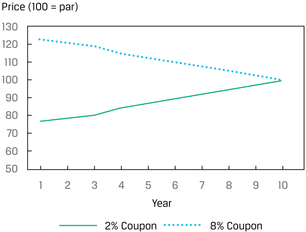
Chú thích hình ảnh: Quỹ đạo giá theo lợi suất không đổi (Constant-Yield Price Trajectory) với trục tung là Giá (Price, 100 = mệnh giá) và trục hoành là Năm (Year từ 1 đến 10): - Đường nét đứt (Trái phiếu coupon 8%): Giá khởi đầu ở mức trên 120 và giảm dần về 100 khi đáo hạn. - Đường nét liền (Trái phiếu coupon 2%): Giá khởi đầu ở mức dưới 80 và tăng dần về 100 khi đáo hạn.
The 2% coupon bond’s initial price is 76.835 per 100 of par value. The price increases each year and approaches par value as the maturity date nears. The 8% coupon bond’s initial price is 123.165, and it decreases each year, approaching par value as the maturity date nears. Both prices are “pulled to par.” Please refer to the candidate learning ecosystem online for a spreadsheet of these calculations in the downloaded Microsoft Excel workbook.
Giá ban đầu của trái phiếu coupon 2% là 76,835 trên mỗi 100 đơn vị mệnh giá. Giá tăng lên mỗi năm và tiến dần về mệnh giá khi ngày đáo hạn đến gần. Giá ban đầu của trái phiếu coupon 8% là 123,165, và nó giảm xuống mỗi năm, tiến dần về mệnh giá khi ngày đáo hạn đến gần. Giá của cả hai trái phiếu đều “hội tụ về mệnh giá” (“pulled to par”). Vui lòng tham khảo hệ sinh thái học tập dành cho ứng viên trực tuyến để xem bảng tính của các phép tính này trong sổ làm việc Microsoft Excel được tải xuống.
Convexity Effect
Hiệu Ứng Độ Lồi (Convexity Effect)
The percentage change in a bond’s price will also vary depending on how the yield changes. The percentage price increase is greater, in absolute value, than the percentage price decrease . This implies that the relationship between bond prices and yields is not linear; instead, it is curved and “convex.” Exhibit 7 shows this general relationship between a bond’s price and its yield-to-maturity.
Phần trăm thay đổi trong giá của một trái phiếu cũng sẽ khác nhau tùy thuộc vào chiều hướng thay đổi của lợi suất. Phần trăm tăng giá lớn hơn, xét theo giá trị tuyệt đối, so với phần trăm giảm giá. Điều này ngụ ý rằng mối quan hệ giữa giá trái phiếu và lợi suất không phải là tuyến tính (not linear); thay vào đó, nó có dạng đường cong và “lồi” (“convex”). Bảng minh họa 7 thể hiện mối quan hệ tổng quát này giữa giá của một trái phiếu và lợi suất đáo hạn của nó.
Exhibit 7: Convex Price–Yield Relationship
Bảng minh họa 7: Mối Quan Hệ Giá–Lợi Suất Lồi (Exhibit 7: Convex Price–Yield Relationship)
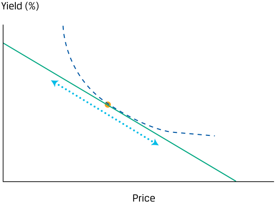
Chú thích hình ảnh: Đường cong lồi biểu diễn mối quan hệ nghịch biến phi tuyến tính giữa Giá (Price - trục tung) và Lợi suất (Yield (%) - trục hoành).
EXAMPLE 7
VÍ DỤ 7 (EXAMPLE 7)
BRWA Bond: Convex Relationship
Trái Phiếu BRWA: Mối Quan Hệ Lồi (BRWA Bond: Convex Relationship)
Despite a uniform increase and decrease in the BRWA bond’s annual yield-to-maturity, notice how the resulting changes in price are different. Please refer to the candidate learning ecosystem online for a spreadsheet of these calculations in the downloaded Microsoft Excel workbook.
Mặc dù lợi suất đáo hạn hàng năm của trái phiếu BRWA tăng và giảm một lượng đồng nhất như nhau, hãy lưu ý cách thức mà các mức thay đổi giá tương ứng lại khác nhau. Vui lòng tham khảo hệ sinh thái học tập dành cho ứng viên trực tuyến để xem bảng tính của các phép tính này trong sổ làm việc Microsoft Excel được tải xuống.
| Face Value | 100 | ||
|---|---|---|---|
| Coupon payment | 1.6 | ||
| Number of periods | 10 | ||
| YTM Change | YTM | Price | % Price Change |
| -- | 0.016 | 100.00 | -- |
| 0.004 | 0.020 | 96.41 | –3.59% |
| –0.004 | 0.012 | 103.75 | 3.75% |
| Mệnh giá (Face Value) | 100 | ||
|---|---|---|---|
| Khoản thanh toán coupon (Coupon payment) | 1,6 | ||
| Số kỳ (Number of periods) | 10 | ||
| Thay đổi YTM (YTM Change) | YTM | Giá (Price) | % Thay đổi giá (% Price Change) |
| -- | 0,016 | 100,00 | -- |
| 0,004 | 0,020 | 96,41 | –3,59% |
| –0,004 | 0,012 | 103,75 | 3,75% |
A decrease in the yield-to-maturity from 160 bps to 120 bps results in a bond price increase of 3.75%, but an increase in the YTM from 160 bps to 200 bps results in a smaller bond price decrease. Based on this, we can say that the BRWA bond has positive convexity. Convexity will be discussed in greater detail in a later lesson.
Việc lợi suất đáo hạn định kỳ giảm từ 160 bps xuống 120 bps dẫn đến mức tăng giá trái phiếu là 3,75%, nhưng việc YTM tăng từ 160 bps lên 200 bps lại dẫn đến mức giảm giá trái phiếu nhỏ hơn (3,59%). Dựa trên điều này, chúng ta có thể nói rằng trái phiếu BRWA có độ lồi dương (positive convexity). Độ lồi sẽ được thảo luận chi tiết hơn trong một bài học sau.
KNOWLEDGE CHECK
KIỂM TRA KIẾN THỨC (KNOWLEDGE CHECK)
- Recall the Romania bond from Example 4. It pays annual coupons at a rate of 4.625% and has a face value of 100. Its issue date is 3 April 2019 and its maturity date is 3 April 2049. Calculate its original yield-to-maturity at issue if its issue price is 99.488.
- Hãy nhớ lại trái phiếu Romania từ Ví dụ 4. Trái phiếu này trả lãi coupon hàng năm ở mức 4,625% và có mệnh giá là 100. Ngày phát hành của nó là ngày 3 tháng 4 năm 2019 và ngày đáo hạn là ngày 3 tháng 4 năm 2049. Hãy tính lợi suất đáo hạn ban đầu tại thời điểm phát hành nếu giá phát hành của nó là 99,488.
Solution:
Lời giải:
The original yield-to-maturity is 4.657%. The YIELD function arguments in Microsoft Excel or Google Sheets are as follows:
Lợi suất đáo hạn ban đầu là 4,657%. Các đối số của hàm YIELD trong Microsoft Excel hoặc Google Sheets như sau:
~~=YIELD(settlement, maturity, rate, pr, redemption, frequency,[basis])~~
=YIELD(settlement, maturity, rate, pr, redemption, frequency,[basis])
=YIELD(DATE(2019,4,3),DATE(2049,4,3),0.04625,99.488,100,1)
=YIELD(DATE(2019,4,3),DATE(2049,4,3),0.04625,99.488,100,1)
= 4.657%
= 4.657%
- Describe the coupon effect.
- Mô tả hiệu ứng coupon (coupon effect).
Solution:
Lời giải:
Given two non-callable, fixed-coupon bonds that have different coupons but are otherwise identical, for a change in yield, the lower-coupon bond will have a greater percentage price change than the higher-coupon bond.
Cho hai trái phiếu trả lãi cố định không kèm quyền mua lại trước hạn có lãi suất coupon khác nhau nhưng giống hệt nhau về mọi mặt khác, đối với một mức thay đổi trong lợi suất, trái phiếu có lãi suất coupon thấp hơn sẽ có phần trăm thay đổi giá lớn hơn so với trái phiếu có lãi suất coupon cao hơn.
- Describe the maturity effect.
- Mô tả hiệu ứng kỳ hạn (maturity effect).
Solution:
Lời giải:
Generally, for two bonds that are identical except for their times-to-maturity, the longer-maturity bond will have a larger percentage price change than will the shorter-maturity bond when yields change by the same amount.
Nhìn chung, đối với hai trái phiếu giống hệt nhau ngoại trừ thời gian đáo hạn của chúng, trái phiếu có kỳ hạn dài hơn sẽ có phần trăm thay đổi giá lớn hơn so với trái phiếu có kỳ hạn ngắn hơn khi lợi suất thay đổi cùng một lượng.
- Two non-callable, fixed-coupon bonds have the same maturity date. One trades at a discount; the other trades at a premium. If the yield stays constant until the bonds mature and neither defaults, the two bonds’ prices will, over time:
-
A. converge.
-
B. remain unchanged.
-
C. diverge.
- Hai trái phiếu trả lãi cố định không kèm quyền mua lại trước hạn có cùng ngày đáo hạn. Một trái phiếu giao dịch ở mức chiết khấu; trái phiếu kia giao dịch ở mức phần bù. Nếu lợi suất giữ nguyên không đổi cho đến khi các trái phiếu đáo hạn và không có trái phiếu nào vỡ nợ, giá của hai trái phiếu này theo thời gian sẽ:
-
A. hội tụ (converge).
-
B. giữ nguyên không đổi (remain unchanged).
-
C. phân kỳ (diverge).
Solution:
Lời giải:
A is correct. The prices will converge because of the “pull-to-par” effect. As the maturity date nears, the present values of future cash flows will fall or rise to the par value, provided that the issuer does not default.
A là đáp án đúng. Giá của chúng sẽ hội tụ do hiệu ứng “kéo về mệnh giá” (“pull-to-par” effect). Khi ngày đáo hạn đến gần, giá trị hiện tại của các dòng tiền tương lai sẽ giảm xuống hoặc tăng lên tiến về mệnh giá, miễn là tổ chức phát hành không vỡ nợ.
4 MATRIX PRICING
4 ĐỊNH GIÁ MA TRẬN (MATRIX PRICING)
mô tả phương pháp định giá ma trận (matrix pricing)
Matrix Pricing Process
Quy Trình Định Giá Ma Trận (Matrix Pricing Process)
Unlike listed equity securities, most bonds are not actively traded, so there is often no current market price available to calculate yield-to-maturity. The same problem occurs for bonds that are not yet issued. In these situations, it is common to estimate price by using the prices of comparable but more frequently traded bonds. These comparable bonds have similar times-to-maturity, coupon rates, and credit quality. This estimation process, illustrated in Exhibit 8 and Exhibit 9, is called matrix pricing .
Không giống như các chứng khoán vốn cổ phần niêm yết, hầu hết các trái phiếu không được giao dịch sôi động, vì vậy thường không có sẵn giá thị trường hiện hành để tính lợi suất đáo hạn. Vấn đề tương tự cũng xảy ra đối với các trái phiếu chưa được phát hành. Trong những tình huống này, người ta thường ước tính giá bằng cách sử dụng giá của các trái phiếu tương đương (comparable bonds) nhưng được giao dịch thường xuyên hơn. Các trái phiếu tương đương này có thời gian đáo hạn, lãi suất coupon và chất lượng tín dụng tương tự. Quy trình ước tính này, được minh họa trong Bảng minh họa 8 và Bảng minh họa 9, được gọi là định giá ma trận (matrix pricing).
Exhibit 8: Matrix Pricing
Bảng minh họa 8: Định Giá Ma Trận (Exhibit 8: Matrix Pricing)
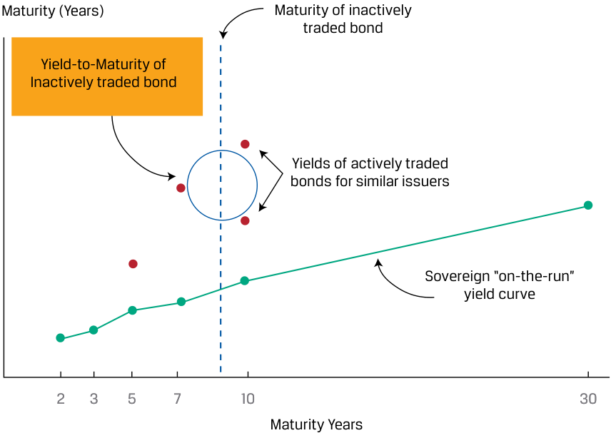
Chú thích hình ảnh: Đồ thị minh họa Định giá ma trận (Matrix Pricing): - Trục hoành: Kỳ hạn tính theo năm (Maturity Years: 2, 3, 5, 7, 10, 30); chỉ ra Kỳ hạn của trái phiếu giao dịch không sôi động (Maturity of inactively traded bond). - Đường dưới cùng: Đường cong lợi suất trái phiếu chính phủ mới phát hành (Sovereign “on-the-run” yield curve). - Các điểm chấm tròn: Lợi suất của các trái phiếu được giao dịch sôi động từ các tổ chức phát hành tương tự (Yields of actively traded bonds for similar issuers). - Điểm chấm vuông (nội suy giữa hai điểm chấm tròn): Lợi suất đáo hạn ước tính của trái phiếu giao dịch không sôi động (Yield-to-Maturity of inactively traded bond).
Exhibit 9: Determining Price of New or Illiquid Bond Using Matrix Pricing
Bảng minh họa 9: Xác Định Giá của Trái Phiếu Mới hoặc Kém Thanh Khoản Bằng Định Giá Ma Trận (Exhibit 9: Determining Price of New or Illiquid Bond Using Matrix Pricing)
| Identify actively Step 1 |
Step 2 | Step 3 | Step 4 |
|---|---|---|---|
| traded,comparable | Calculate yields-to- | ||
| bonds based on similar | maturity for each of the | Linearly interpolate | |
| times-to-maturity, | comparable bonds, and | calculated YTMs of the | Using estimated YTM, |
| coupon rates, and credit quality. |
calculate average yield for each maturity year. |
comparable bonds to estimate YTM closest to the new/illiquid bond’s maturity |
calculate the price of the new/illiquid bond by discounting all coupon and pricipal payments. |
| Bước 1 (Step 1) | Bước 2 (Step 2) | Bước 3 (Step 3) | Bước 4 (Step 4) |
|---|---|---|---|
| Xác định các trái phiếu tương đương được giao dịch sôi động dựa trên thời gian đáo hạn, lãi suất coupon và chất lượng tín dụng tương tự. | Tính toán lợi suất đáo hạn (YTM) cho từng trái phiếu tương đương, và tính lợi suất trung bình cho mỗi năm đáo hạn. | Nội suy tuyến tính (linearly interpolate) các mức YTM đã tính của các trái phiếu tương đương để ước tính YTM gần nhất với kỳ hạn của trái phiếu mới/kém thanh khoản. | Sử dụng mức YTM ước tính, tính giá của trái phiếu mới/kém thanh khoản bằng cách chiết khấu tất cả các khoản thanh toán coupon và gốc. |
For example, suppose that an analyst needs to value a three-year, 4% semiannual coupon payment corporate bond, Bond X. Assume that Bond X is not actively traded and that there are no recent transactions reported for this particular security. Exhibit 10 and Exhibit 11 shows quoted prices and yields-to-maturity for four corporate bonds with very similar credit quality, in tabular and matrix form (by coupon rate and time-to-maturity).
Ví dụ, giả sử một chuyên viên phân tích cần định giá một trái phiếu doanh nghiệp kỳ hạn 3 năm, trả lãi coupon bán niên 4%/năm, gọi là Trái phiếu X. Giả sử Trái phiếu X không được giao dịch sôi động và không có giao dịch gần đây nào được báo cáo cho chứng khoán cụ thể này. Bảng minh họa 10 và Bảng minh họa 11 thể hiện giá yết và lợi suất đáo hạn của bốn trái phiếu doanh nghiệp có chất lượng tín dụng rất tương đồng, dưới dạng bảng và dạng ma trận (theo lãi suất coupon và thời gian đáo hạn).
Exhibit 10: Actively Traded Comparable Bonds
Bảng minh họa 10: Các Trái Phiếu Tương Đương Được Giao Dịch Sôi Động (Exhibit 10: Actively Traded Comparable Bonds)
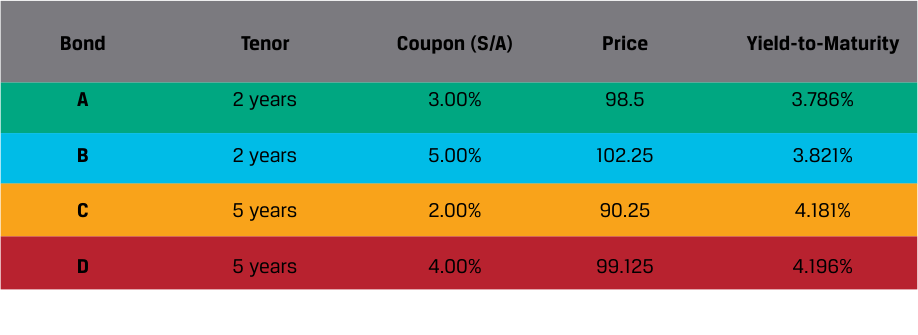
Chú thích hình ảnh: Bảng thông số 4 trái phiếu tương đương được giao dịch sôi động: - Trái phiếu A (Bond A): Kỳ hạn (Tenor) 2 năm, Coupon (Bán niên - S/A) 3,00%, Giá (Price) 98,5, Lợi suất đáo hạn (Yield-to-Maturity) 3,786%. - Trái phiếu B (Bond B): Kỳ hạn 2 năm, Coupon (S/A) 5,00%, Giá 102,25, Lợi suất đáo hạn 3,821%. - Trái phiếu C (Bond C): Kỳ hạn 5 năm, Coupon (S/A) 2,00%, Giá 90,25, Lợi suất đáo hạn 4,181%. - Trái phiếu D (Bond D): Kỳ hạn 5 năm, Coupon (S/A) 4,00%, Giá 99,125, Lợi suất đáo hạn 4,196%.
Exhibit 11: Actively Traded Comparable Bonds Matrix
Bảng minh họa 11: Ma Trận Các Trái Phiếu Tương Đương Được Giao Dịch Sôi Động (Exhibit 11: Actively Traded Comparable Bonds Matrix)
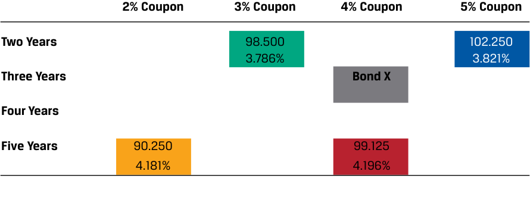
Chú thích hình ảnh: Ma trận các trái phiếu tương đương theo Kỳ hạn (2 năm, 3 năm, 4 năm, 5 năm) và Lãi suất Coupon (2%, 3%, 4%, 5%): - Hàng Hai năm (Two Years): Cột 3% Coupon (98,500; 3,786%), Cột 5% Coupon (102,250; 3,821%). - Hàng Ba năm (Three Years): Cột 4% Coupon là Trái phiếu X (Bond X). - Hàng Năm năm (Five Years): Cột 2% Coupon (90,250; 4,181%), Cột 4% Coupon (99,125; 4,196%).
Next, the analyst calculates the average yield for each year: 3.8035% for the two-year bonds and 4.1885% for the five-year bonds.
Tiếp theo, chuyên viên phân tích tính lợi suất trung bình cho mỗi năm đáo hạn: 3,8035% đối với các trái phiếu kỳ hạn 2 năm và 4,1885% đối với các trái phiếu kỳ hạn 5 năm.
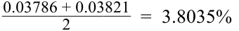
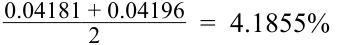
The estimated three-year yield for bonds of similar credit quality can be obtained with linear interpolation. The interpolated yield is 3.932%.
Lợi suất kỳ hạn 3 năm ước tính cho các trái phiếu có chất lượng tín dụng tương tự có thể thu được bằng phương pháp nội suy tuyến tính (linear interpolation). Lợi suất nội suy là 3,932%.
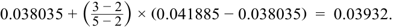
Using 3.9318% as the estimated three-year annual yield, the three-year, 4% semiannual coupon payment corporate bond has an estimated price of 100.191 per 100 of par value.
Sử dụng 3,9318% làm mức lợi suất hàng năm ước tính cho kỳ hạn 3 năm (tương đương lãi suất bán niên là $3{,}9318\% / 2 = 1{,}9659\%$), trái phiếu doanh nghiệp kỳ hạn 3 năm trả lãi coupon bán niên 4%/năm có mức giá ước tính là 100,191 trên mỗi 100 đơn vị mệnh giá.
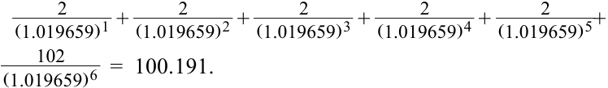
Calculation of yield-to-maturity can also be done with the Excel or Google Sheets YIELD function:
Việc tính toán lợi suất đáo hạn cũng có thể được thực hiện bằng hàm YIELD trong Excel hoặc Google Sheets:
=YIELD(DATE(2025,10,1),DATE(2028,10,1),0.04,100.191,100,2,1)
=YIELD(DATE(2025,10,1),DATE(2028,10,1),0.04,100.191,100,2,1)
Matrix pricing also is used in underwriting new bonds to get an estimate of the required yield spread over the benchmark rate, or the difference in yield-to-maturity between the bond and that of a government benchmark bond with the same or a similar time-to-maturity.
Định giá ma trận cũng được sử dụng trong việc bảo lãnh phát hành các trái phiếu mới nhằm thu được ước tính về mức chênh lệch lợi suất yêu cầu (required yield spread) so với lãi suất chuẩn (benchmark rate), tức là sự chênh lệch về lợi suất đáo hạn giữa trái phiếu đó và một trái phiếu chuẩn của chính phủ có cùng thời gian đáo hạn hoặc có thời gian đáo hạn tương tự.
Suppose that a corporation is about to issue a five-year bond. The corporate issuer currently has a four-year, 3% annual coupon payment debt liability. The price of that bond is 102.400 per 100 of par value. This is the full price, which is the same as the flat price because the accrued interest is zero. This implies that the coupon payment has just been made and there are four full years to maturity. The four-year rate of return required by investors for this bond is 2.36%:
Giả sử một tập đoàn sắp phát hành một trái phiếu kỳ hạn 5 năm. Tổ chức phát hành doanh nghiệp này hiện đang có một khoản nợ trái phiếu kỳ hạn 4 năm, trả lãi coupon hàng năm 3%. Giá của trái phiếu đó là 102,400 trên mỗi 100 đơn vị mệnh giá. Đây là giá gộp, bằng đúng với giá tịnh bởi vì lãi tích lũy bằng không. Điều này ngụ ý rằng khoản thanh toán coupon vừa mới được thực hiện và còn trọn vẹn 4 năm nữa là đến khi đáo hạn. Tỷ suất sinh lợi kỳ hạn 4 năm mà các nhà đầu tư yêu cầu đối với trái phiếu này là 2,36%:
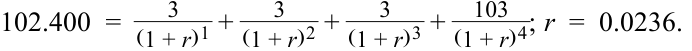
This can also be calculated using the YIELD function in Microsoft Excel or Google Sheets:
Kết quả này cũng có thể được tính bằng hàm YIELD trong Microsoft Excel hoặc Google Sheets:
=YIELD(DATE(2025,10,1),DATE(2029,10,1),0.03,102.401,100,2,1)
=YIELD(DATE(2025,10,1),DATE(2029,10,1),0.03,102.401,100,2,1)
Suppose that there are no four-year government bonds to calculate the required yield spread on this security. However, there are three-year and five-year government bonds that have yields-to-maturity of 0.75% and 1.45%, respectively. The average of the two yields-to-maturity is 1.10%, which is the estimated yield for the four-year government bond. Therefore, the estimated required yield spread is 126 bps over the implied benchmark rate (0.0236 – 0.0110 = 0.0126).
Giả sử không có trái phiếu chính phủ kỳ hạn 4 năm để tính mức chênh lệch lợi suất yêu cầu trên chứng khoán này. Tuy nhiên, có các trái phiếu chính phủ kỳ hạn 3 năm và 5 năm có lợi suất đáo hạn lần lượt là 0,75% và 1,45%. Trung bình cộng của hai mức lợi suất đáo hạn này là 1,10%, đây là mức lợi suất ước tính cho trái phiếu chính phủ kỳ hạn 4 năm. Do đó, mức chênh lệch lợi suất yêu cầu ước tính là 126 bps cao hơn lãi suất chuẩn ngầm định ($0{,}0236 - 0{,}0110 = 0{,}0126$).
The issuer now has an estimate of the four-year yield spread: 126 bps. This spread is a reference point for estimating the five-year spread for the newly issued bond.
Tổ chức phát hành hiện đã có một ước tính về mức chênh lệch lợi suất kỳ hạn 4 năm: 126 bps. Mức chênh lệch này là điểm tham chiếu để ước tính mức chênh lệch kỳ hạn 5 năm cho trái phiếu mới phát hành.
QUESTION SET
BỘ CÂU HỎI (QUESTION SET)
- True or false: Bond price quotes on such platforms as Bloomberg often represent the price at which the most recent trade for that bond was made.
-
A. True
-
B. False
-
Solution:
- Đúng hay sai: Báo giá trái phiếu trên các nền tảng như Bloomberg thường đại diện cho mức giá mà tại đó giao dịch gần nhất của trái phiếu đó được thực hiện.
-
A. Đúng (True)
-
B. Sai (False)
-
Lời giải:
False. Most bonds are infrequently traded, so price quotes on such platforms as Bloomberg are often estimated using matrix pricing methods.
Sai. Hầu hết các trái phiếu được giao dịch không thường xuyên, vì vậy báo giá trên các nền tảng như Bloomberg thường được ước tính bằng các phương pháp định giá ma trận (matrix pricing methods).
- An analyst is estimating a price for an illiquid four-year, 4.5% annual coupon payment corporate bond. The analyst identifies two corporate bonds that have similar credit quality: One is a three-year, 5.50% annual coupon payment bond priced at 107.500 per 100 of par value, and the other is a fiveyear, 4.50% annual coupon payment bond priced at 104.750 per 100 of par value. Using matrix pricing, the estimated price of the illiquid bond per 100 of par value is closest to:
- Một chuyên viên phân tích đang ước tính giá cho một trái phiếu doanh nghiệp kém thanh khoản có kỳ hạn 4 năm, trả lãi coupon hàng năm 4,5%. Chuyên viên phân tích xác định được hai trái phiếu doanh nghiệp có chất lượng tín dụng tương tự: Một là trái phiếu kỳ hạn 3 năm, trả lãi coupon hàng năm 5,50% được định giá ở mức 107,500 trên mỗi 100 đơn vị mệnh giá, và trái phiếu kia là trái phiếu kỳ hạn 5 năm, trả lãi coupon hàng năm 4,50% được định giá ở mức 104,750 trên mỗi 100 đơn vị mệnh giá. Sử dụng định giá ma trận, mức giá ước tính của trái phiếu kém thanh khoản trên mỗi 100 đơn vị mệnh giá gần nhất với:
A. 103.895.
A. 103,895.
B. 104.991.
B. 104,991.
C. 106.125.
C. 106,125.
Solution:
Lời giải:
B is correct. The first step is to determine the yields-to-maturity on the observed bonds. The required yield on the three-year, 5.50% bond priced at 107.500 is 2.856%:
B là đáp án đúng. Bước đầu tiên là xác định lợi suất đáo hạn trên các trái phiếu quan sát được. Lợi suất yêu cầu đối với trái phiếu kỳ hạn 3 năm, coupon 5,50% có giá 107,500 là 2,856%:
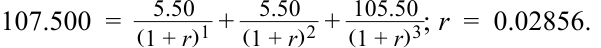
The required yield on the five-year, 4.50% bond priced at 104.750 is 3.449%:
Lợi suất yêu cầu đối với trái phiếu kỳ hạn 5 năm, coupon 4,50% có giá 104,750 là 3,449%:
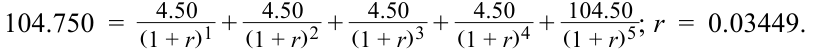
The estimated yield for a four-year bond having the same credit quality is the average of two required yields:
Lợi suất ước tính cho một trái phiếu kỳ hạn 4 năm có cùng chất lượng tín dụng là trung bình cộng của hai mức lợi suất yêu cầu:
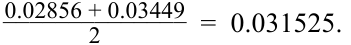
Given an estimated yield-to-maturity of 3.153%, the estimated price of the illiquid four-year, 4.50% annual coupon payment corporate bond is 104.991 per 100 of par value:
Với lợi suất đáo hạn ước tính là 3,153%, giá ước tính của trái phiếu doanh nghiệp kém thanh khoản kỳ hạn 4 năm, trả lãi coupon hàng năm 4,50% là 104,991 trên mỗi 100 đơn vị mệnh giá:
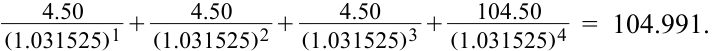
- An analyst uses the matrix pricing approach to determine the price of an illiquid bond. Identify three bond features that could be used to compare frequently traded bonds with the illiquid one.
- Solution:
- Một chuyên viên phân tích sử dụng phương pháp định giá ma trận để xác định giá của một trái phiếu kém thanh khoản. Hãy xác định ba đặc tính của trái phiếu có thể được sử dụng để so sánh các trái phiếu được giao dịch thường xuyên với trái phiếu kém thanh khoản đó.
- Lời giải:
Matrix pricing involves determining the price of a new or illiquid bond by comparing it to frequently traded bonds with similar
Định giá ma trận bao gồm việc xác định giá của một trái phiếu mới hoặc kém thanh khoản bằng cách so sánh nó với các trái phiếu được giao dịch thường xuyên có sự tương đồng về:
1. maturity,
1. kỳ hạn (maturity),
2. coupon rates, and
2. lãi suất coupon (coupon rates), và
3. credit quality.
3. chất lượng tín dụng (credit quality).
~~PRACTICE PROBLEMS~~
CÂU HỎI THỰC HÀNH (PRACTICE PROBLEMS)
1. A non-callable, fixed-coupon bond has a price of 106.0625 and a YTM of 2.8%. If the YTM were to increase instantaneously by 80 bps, the price of the bond would decrease by 11%. If the YTM were to decrease instantaneously by 80 bps, the price of the bond would increase by:
1. Một trái phiếu trả lãi cố định không kèm quyền mua lại trước hạn có giá là 106,0625 và YTM là 2,8%. Nếu YTM tăng tức thời thêm 80 bps, giá của trái phiếu sẽ giảm 11%. Nếu YTM giảm tức thời đi 80 bps, giá của trái phiếu sẽ tăng thêm:
-
A. less than 11%.
-
B. exactly 11%.
-
C. more than 11%.
-
A. ít hơn 11%.
-
B. đúng bằng 11%.
-
C. nhiều hơn 11%.
2. Exceptions to the maturity effect exist for bonds that have:
2. Các ngoại lệ đối với hiệu ứng kỳ hạn (maturity effect) tồn tại đối với các trái phiếu có:
-
A. long maturities, make small coupon payments, and trade at a discount.
-
B. short maturities, have high coupon rates, and trade at a discount.
-
C. long maturities, have high coupon rates, and trade at a premium.
-
A. kỳ hạn dài, trả các khoản thanh toán coupon nhỏ và giao dịch ở mức chiết khấu.
-
B. kỳ hạn ngắn, có lãi suất coupon cao và giao dịch ở mức chiết khấu.
-
C. kỳ hạn dài, có lãi suất coupon cao và giao dịch ở mức phần bù.
3. With a constant market discount rate, as a non-callable, fixed-coupon bond approaches maturity:
3. Với lãi suất chiết khấu thị trường không đổi, khi một trái phiếu trả lãi cố định không kèm quyền mua lại trước hạn tiến gần đến ngày đáo hạn:
-
A. the price–yield relationship will become more convex.
-
B. a low-coupon bond trading at a discount will increase in price.
-
C. a high-coupon bond trading at a premium will increase in price.
-
A. mối quan hệ giá–lợi suất sẽ trở nên lồi hơn (more convex).
-
B. một trái phiếu có lãi suất coupon thấp đang giao dịch ở mức chiết khấu sẽ tăng giá.
-
C. một trái phiếu có lãi suất coupon cao đang giao dịch ở mức phần bù sẽ tăng giá.
4. A fixed-income analyst is pricing a bond using the following equation.
4. Một chuyên viên phân tích thu nhập cố định đang định giá một trái phiếu bằng phương trình sau đây.
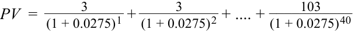
The bond’s price, relative to par, is most likely :
Giá của trái phiếu này, so với mệnh giá, nhiều khả năng nhất là:
-
A. greater than 100.
-
B. exactly 100.
-
C. less than 100.
-
A. lớn hơn 100.
-
B. bằng đúng 100.
-
C. nhỏ hơn 100.
5. A four-year, 2.0% semiannual coupon bond that pays coupons semiannually is trading at a price of 102.581. The bond’s annualized yield-to-maturity is closest to : A. 0.67%.
5. Một trái phiếu kỳ hạn 4 năm, lãi suất coupon bán niên 2,0%/năm (trả lãi định kỳ mỗi nửa năm) đang giao dịch ở mức giá 102,581. Lợi suất đáo hạn quy đổi theo năm (annualized yield-to-maturity) của trái phiếu này gần nhất với:
B. 1.34%.
A. 0,67%.
B. 1,34%.
C. 2.22%.
C. 2,22%.
6. A bond is traded in between its coupon payment dates. Which of the following is true?
6. Một trái phiếu được giao dịch ở giữa các ngày thanh toán coupon của nó. Phát biểu nào sau đây là đúng?
-
A. The buyer must pay the full price plus the accrued interest.
-
B. The bond’s quoted price is greater than its flat price.
-
C. Accrued interest is not included in the flat price.
-
A. Người mua phải trả giá gộp (full price) cộng với lãi tích lũy (accrued interest).
-
B. Giá yết (quoted price) của trái phiếu lớn hơn giá tịnh (flat price) của nó.
-
C. Lãi tích lũy không được bao gồm trong giá tịnh (flat price).
7. An analyst is analyzing a bond that will soon be issued by XYZ Company. The new bond will have five years to maturity and a 2.25% coupon, paid semiannually. XYZ has never issued bonds before, so the analyst will use matrix pricing. The analyst has identified four similar bonds with the following characteristics.
7. Một chuyên viên phân tích đang phân tích một trái phiếu sắp được Công ty XYZ phát hành. Trái phiếu mới sẽ có thời gian đáo hạn là 5 năm và lãi suất coupon 2,25%, trả bán niên. XYZ chưa từng phát hành trái phiếu trước đây, vì vậy chuyên viên phân tích sẽ sử dụng phương pháp định giá ma trận. Chuyên viên phân tích đã xác định được bốn trái phiếu tương tự có các đặc điểm sau đây.
| Bond | Maturity | Coupon (S/A) | YTM |
|---|---|---|---|
| A | 4 Years | 2.250% | 1.6995% |
| B | 4 Years | 1.750% | 1.5438% |
| C | 7 Years | 2.250% | 2.2671% |
| D | 7 Years | 1.500% | 1.9576% |
| Trái phiếu (Bond) | Kỳ hạn (Maturity) | Coupon (Bán niên - S/A) | YTM |
|---|---|---|---|
| A | 4 năm | 2,250% | 1,6995% |
| B | 4 năm | 1,750% | 1,5438% |
| C | 7 năm | 2,250% | 2,2671% |
| D | 7 năm | 1,500% | 1,9576% |
Using the information provided, create a pricing matrix for the analyst to estimate the price of the XYZ five-year bond by filling in the matrix below with Bonds A, B, C, and D:
Sử dụng thông tin được cung cấp, hãy lập một ma trận định giá để chuyên viên phân tích ước tính giá của trái phiếu XYZ kỳ hạn 5 năm bằng cách điền các Trái phiếu A, B, C và D vào ma trận dưới đây:
| Coupon Rate | |||
|---|---|---|---|
| 1.50% | 1.75% 2.25% |
2.25% | |
| 4 Years | |||
| 5 Years | |||
| 6 Years | |||
| 7 Years |
| Lãi Suất Coupon (Coupon Rate) | ||||
|---|---|---|---|---|
| 1,50% | 1,75% | 2,25% | 2,25% | |
| 4 năm (4 Years) | ||||
| 5 năm (5 Years) | ||||
| 6 năm (6 Years) | ||||
| 7 năm (7 Years) |
~~SOLUTIONS~~
LỜI GIẢI (SOLUTIONS)
- C is correct. The absolute amount of the price increase would be more than the absolute amount of the price decrease for the same absolute change in YTM because of the convex relationship between bond price and yield.
- A is incorrect because of the positive convex relationship between bond price and yield. For a given level of yield change, the price rise for that given amount of yield decrease will be larger than the price decline for that amount of yield increase.
B is incorrect because the relationship between bond price and yield is not linear.
- A is correct. Exceptions to the maturity effect are rare and occur only for low-coupon (but not zero-coupon) long-term bonds trading at a discount. B is incorrect because the maturity effect holds for bonds that have short maturities and high coupons.
- C is incorrect because the maturity effect always holds on bonds priced at a premium above par value.
- B is correct. Any bond trading at a discount will increase in price because of the pull-to-par effect.
-
A is incorrect because the price–yield relationship generally becomes less convex as a bond approaches maturity.
-
C is incorrect because a high-coupon bond trading at a premium will decrease in price as it approaches maturity.
- A is correct. The bond’s periodic coupon rate exceeds the periodic market discount rate, or its coupon rate is “excessive” relative to the market. Therefore, the bond will trade at a premium to par. B is incorrect. For the bond to trade at par, the coupon rate and market discount rate (yield-to-maturity) must be equal.
- C is incorrect. For the bond to trade at a discount, the yield-to-maturity would have to be higher than the coupon rate.
- B is correct. Two approaches to calculating the yield-to-maturity are calculating an IRR or using the YIELD function in Microsoft Excel or Google Sheets. The periodic IRR is annualized by multiplying by two.
- C là đáp án đúng. Mức tăng giá tuyệt đối sẽ lớn hơn mức giảm giá tuyệt đối cho cùng một mức thay đổi tuyệt đối trong YTM bởi vì mối quan hệ lồi (convex relationship) giữa giá trái phiếu và lợi suất.
-
A không đúng vì mối quan hệ lồi dương (positive convex relationship) giữa giá trái phiếu và lợi suất. Đối với một mức thay đổi lợi suất nhất định, mức tăng giá khi lợi suất giảm đi lượng đó sẽ lớn hơn mức giảm giá khi lợi suất tăng lên cùng lượng đó.
-
B không đúng vì mối quan hệ giữa giá trái phiếu và lợi suất không phải là tuyến tính.
- A là đáp án đúng. Các ngoại lệ đối với hiệu ứng kỳ hạn rất hiếm gặp và chỉ xảy ra đối với các trái phiếu dài hạn có lãi suất coupon thấp (nhưng không phải trái phiếu không trả lãi định kỳ) đang giao dịch ở mức chiết khấu. B không đúng vì hiệu ứng kỳ hạn luôn đúng đối với các trái phiếu có kỳ hạn ngắn và lãi suất coupon cao.
- C không đúng vì hiệu ứng kỳ hạn luôn luôn đúng đối với các trái phiếu được định giá ở mức phần bù cao hơn mệnh giá.
- B là đáp án đúng. Bất kỳ trái phiếu nào đang giao dịch ở mức chiết khấu đều sẽ tăng giá do hiệu ứng kéo về mệnh giá (pull-to-par effect).
-
A không đúng vì mối quan hệ giá–lợi suất nhìn chung trở nên ít lồi hơn khi trái phiếu tiến gần đến ngày đáo hạn.
-
C không đúng vì một trái phiếu có lãi suất coupon cao đang giao dịch ở mức phần bù sẽ giảm giá khi tiến gần đến ngày đáo hạn.
- A là đáp án đúng. Lãi suất coupon định kỳ của trái phiếu (3%) vượt quá lãi suất chiết khấu thị trường định kỳ (2,75%), hay lãi suất coupon của nó là “vượt trội/dư thừa” (“excessive”) so với thị trường. Do đó, trái phiếu sẽ giao dịch ở mức phần bù so với mệnh giá (lớn hơn 100). B không đúng. Để trái phiếu giao dịch ngang mệnh giá, lãi suất coupon và lãi suất chiết khấu thị trường (lợi suất đáo hạn) phải bằng nhau.
- C không đúng. Để trái phiếu giao dịch ở mức chiết khấu, lợi suất đáo hạn phải cao hơn lãi suất coupon.
- B là đáp án đúng. Hai phương pháp tiếp cận để tính lợi suất đáo hạn là tính IRR hoặc sử dụng hàm
YIELDtrong Microsoft Excel hay Google Sheets. IRR định kỳ được quy đổi theo năm bằng cách nhân với hai.
| Period | Cash Flow | YIELD Function | |
|---|---|---|---|
| 0 | –102.581 | Settlement date | 1/1/2000 |
| 1 | 1 | Maturity date | 1/1/2004 |
| 2 | 1 | Coupon | 0.02 |
| 3 | 1 | Price | 102.581 |
| 4 | 1 | Redemption | 100 |
| 5 | 1 | Coupon frequency | 2 |
| 6 | 1 | Yield | 1.34% |
| 7 | 1 | ||
| 8 | 101 | ||
| Periodic IRR | 0.67% | ||
| Annualized IRR | 1.34% |
| Kỳ (Period) | Dòng tiền (Cash Flow) | Hàm YIELD (YIELD Function) | |
|---|---|---|---|
| 0 | –102,581 | Ngày thanh toán (Settlement date) | 1/1/2000 |
| 1 | 1 | Ngày đáo hạn (Maturity date) | 1/1/2004 |
| 2 | 1 | Lãi suất coupon (Coupon) | 0,02 |
| 3 | 1 | Giá (Price) | 102,581 |
| 4 | 1 | Giá trị hoàn trả (Redemption) | 100 |
| 5 | 1 | Tần suất coupon (Coupon frequency) | 2 |
| 6 | 1 | Lợi suất (Yield) | 1,34% |
| 7 | 1 | ||
| 8 | 101 | ||
| IRR định kỳ (Periodic IRR) | 0,67% | ||
| IRR quy đổi năm (Annualized IRR) | 1,34% |
A is incorrect because 0.67% is the periodic, not annualized, yield-to-maturity.
A không đúng vì 0,67% là lợi suất đáo hạn định kỳ (nửa năm), chứ không phải lợi suất quy đổi theo năm.
C is incorrect. Note that this choice can be eliminated because the bond is trading at a premium; thus its yield-to-maturity is lower than its coupon rate of 2.0%. Please refer to the candidate learning ecosystem online for a spreadsheet of these calculations in the downloaded Microsoft Excel workbook.
C không đúng. Lưu ý rằng phương án này có thể bị loại trừ ngay bởi vì trái phiếu đang giao dịch ở mức phần bù; do đó lợi suất đáo hạn của nó phải thấp hơn mức lãi suất coupon 2,0% của nó. Vui lòng tham khảo hệ sinh thái học tập dành cho ứng viên trực tuyến để xem bảng tính của các phép tính này trong sổ làm việc Microsoft Excel được tải xuống.
- C is correct. The flat price, quoted by bond dealers, is the full price less accrued interest. Accrued interest is not included in the flat price. A is incorrect. The buyer must pay the full price, which already includes accrued interest.
- C là đáp án đúng. Giá tịnh (flat price), được các nhà tạo lập thị trường trái phiếu báo giá, bằng giá gộp (full price) trừ đi lãi tích lũy (accrued interest). Lãi tích lũy không được bao gồm trong giá tịnh. A không đúng. Người mua phải trả giá gộp, trong đó đã bao gồm lãi tích lũy.
B is incorrect. The flat price is the quoted price.
B không đúng. Giá tịnh chính là giá yết (quoted price).
- To price the new XYZ bond, the analyst should group yields for comparable bonds in a matrix with maturities and coupon rates.
- Để định giá trái phiếu XYZ mới, chuyên viên phân tích nên nhóm lợi suất của các trái phiếu tương đương vào một ma trận theo kỳ hạn và lãi suất coupon.
| Coupo | n Rate | |||
|---|---|---|---|---|
| 1.50% | 1.75% | 2.25% | 2.25% | |
| 4 Years | B | A | ||
| 5 Years | ||||
| 6 Years | ||||
| 7 Years | D | C |
| Lãi Suất Coupon (Coupon Rate) | ||||
|---|---|---|---|---|
| 1,50% | 1,75% | 2,25% | 2,25% | |
| 4 năm (4 Years) | B | A | ||
| 5 năm (5 Years) | ||||
| 6 năm (6 Years) | ||||
| 7 năm (7 Years) | D | C |